First screen: activity bar, Explorer, Welcome document and Outline in the dock, status bar
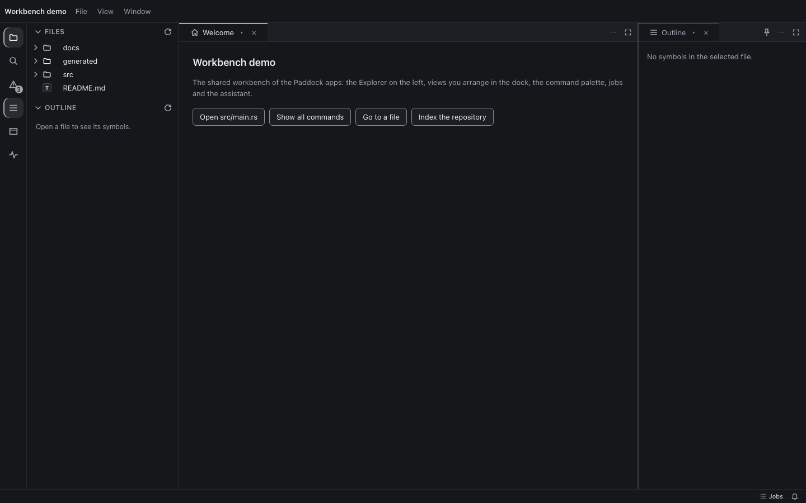
Two files as instances of Code, Problems (pd-table) below, Outline at the side; every group at or above its minimumPalette: commands and "Open ", recent and common first, keys and categories, prefixes listed", recent and common first, keys and categories, prefixes listed" src="dark-palette.png">Palette, "@": the names search provider (engine matching) with why it matched
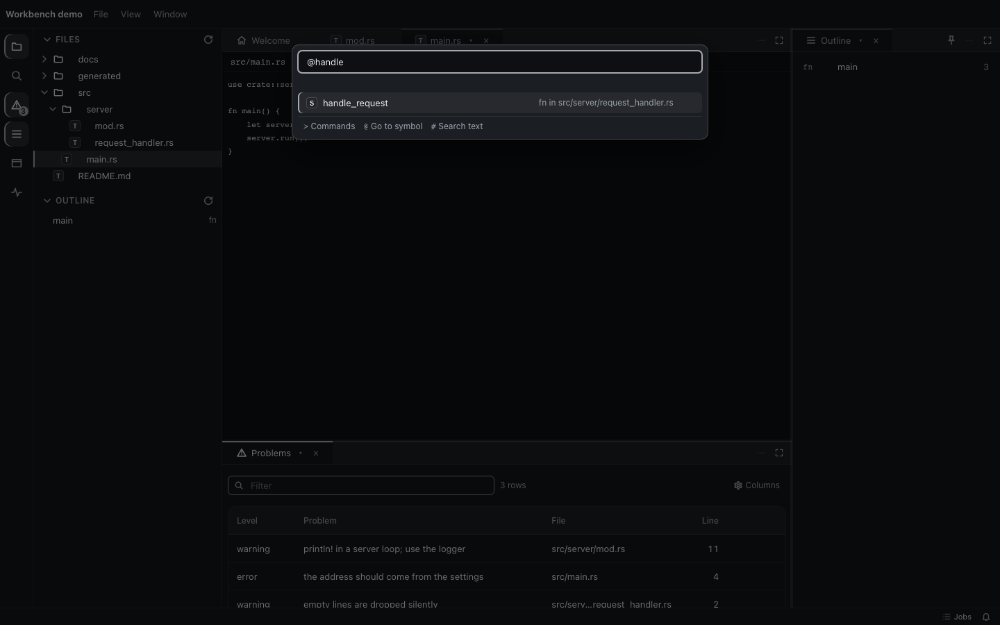
Palette: nothing matches, "Did you mean" offers the close command
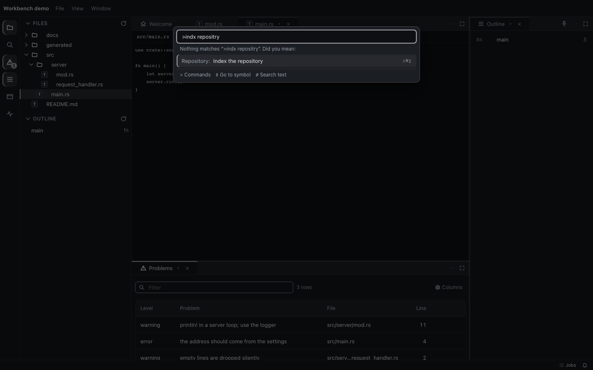
Explorer: context menu of a file (also Shift+F10); folders paged with "Show more"
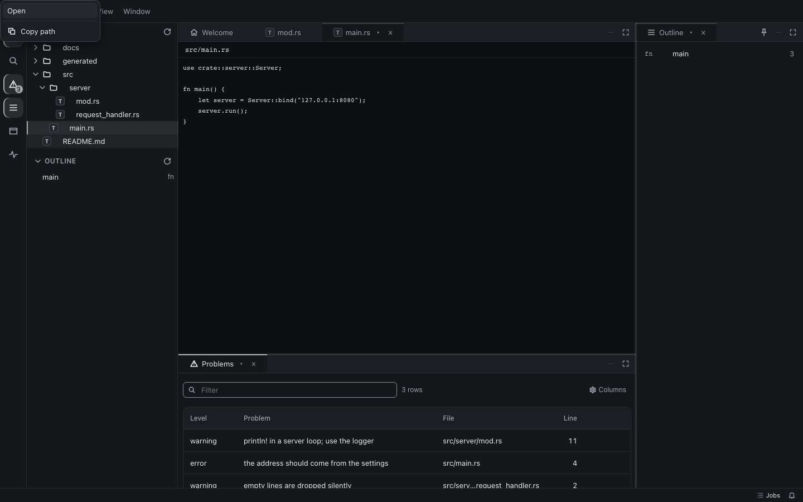
Activity bar: a fly-out item (perspectives); the Problems badge is part of its name
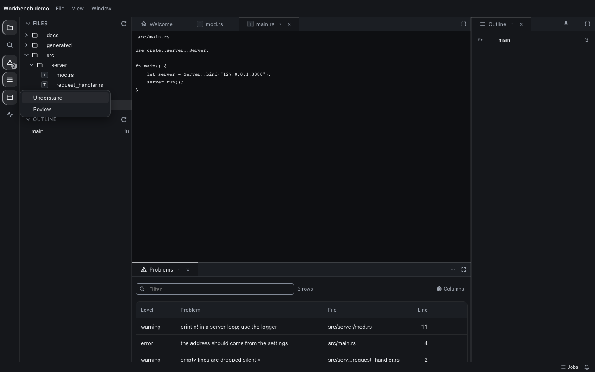
Assistant pane on Pitwall: the calm "not running" state with its fix (pd-needs-ai)
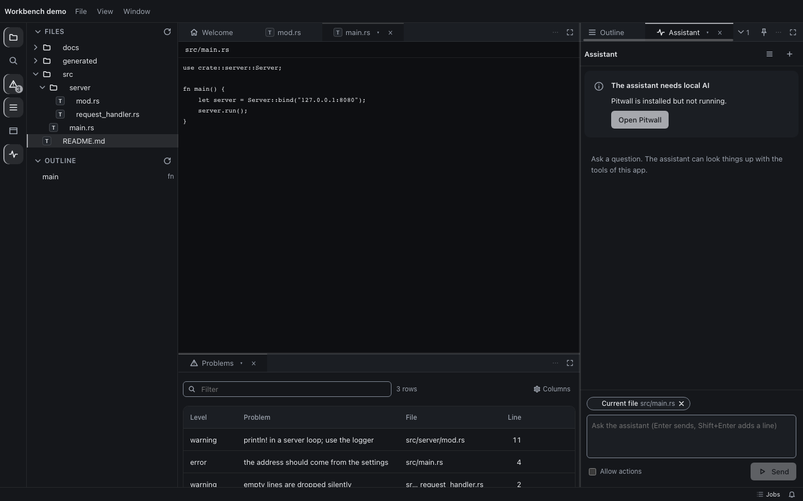
Jobs: the shell jobs list as a status pane at the bottom edge
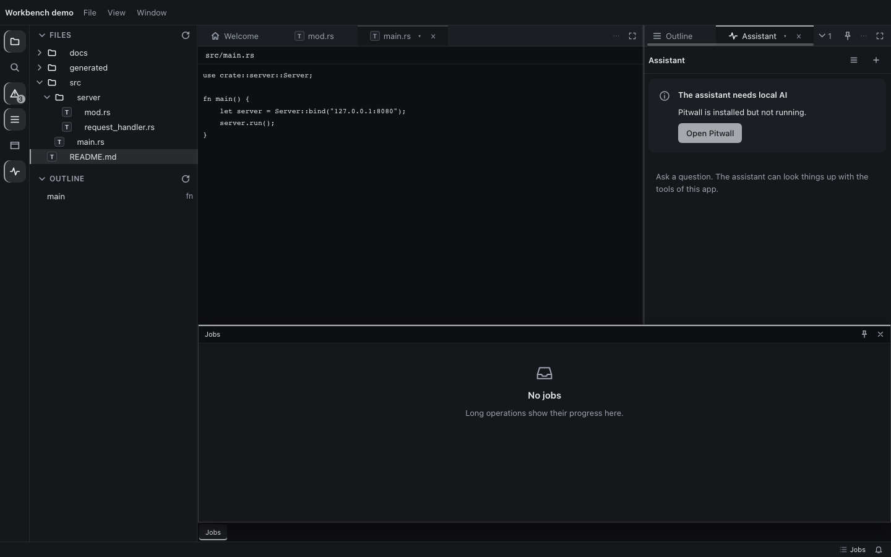
A 600 px window: the layout plan closed the Explorer for the document (Mod+B brings it back)
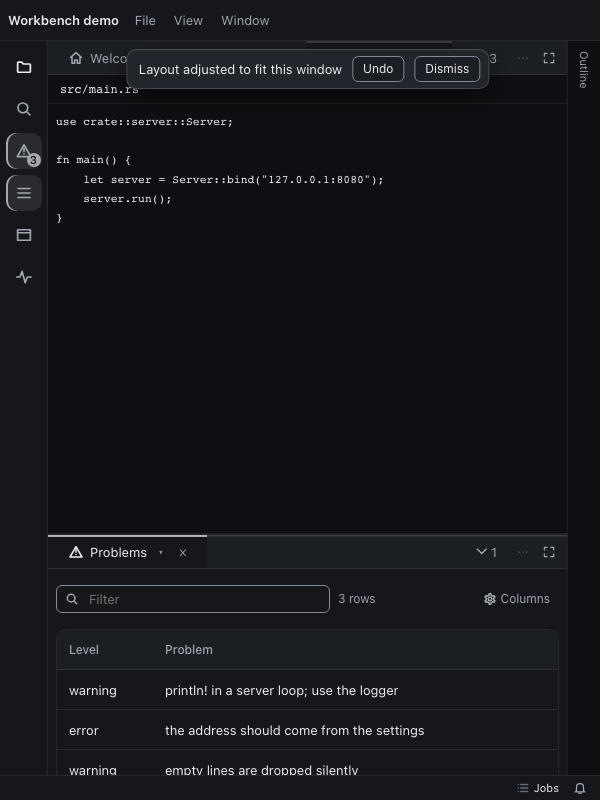
320 px: nothing scrolls sideways (rule 18)
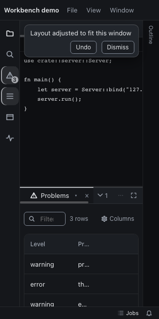
light
First screen: activity bar, Explorer, Welcome document and Outline in the dock, status bar
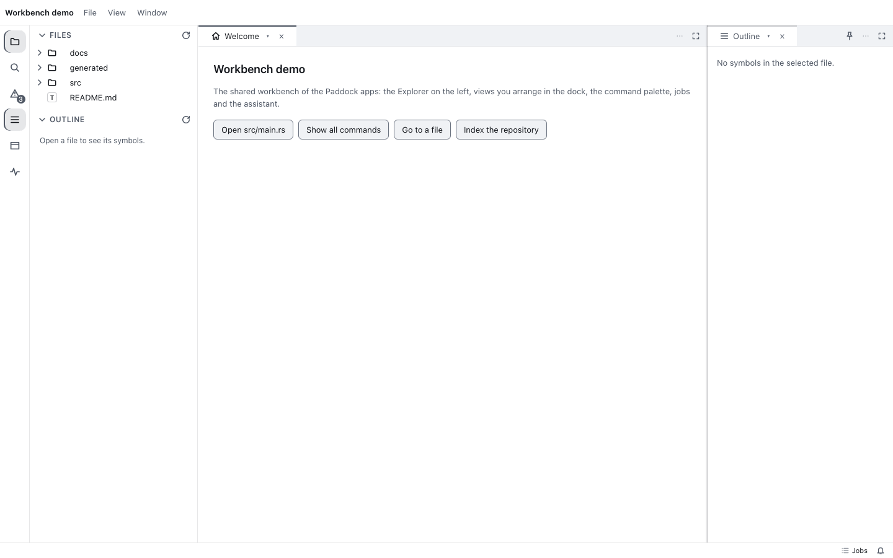
Two files as instances of Code, Problems (pd-table) below, Outline at the side; every group at or above its minimum
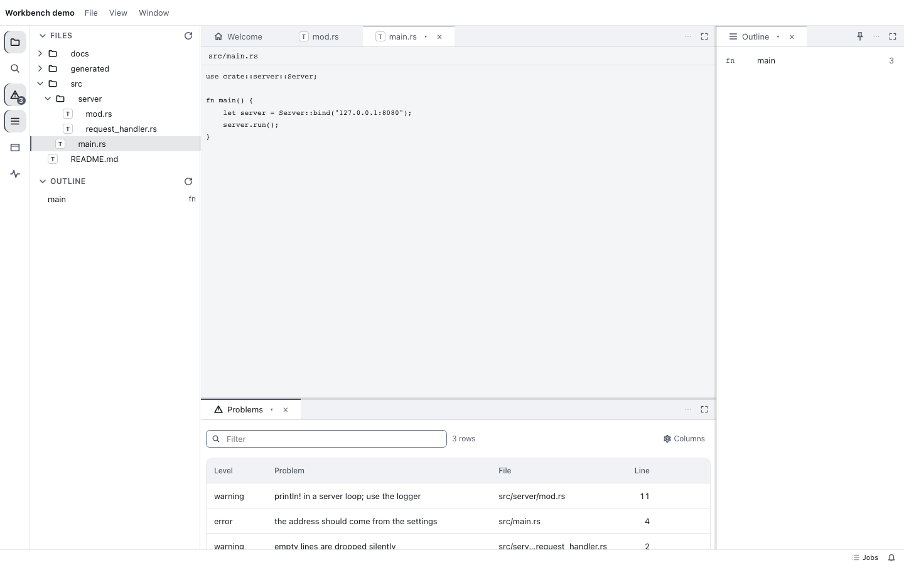
Palette: commands and "Open ", recent and common first, keys and categories, prefixes listed", recent and common first, keys and categories, prefixes listed" src="light-palette.png">Palette, "@": the names search provider (engine matching) with why it matched
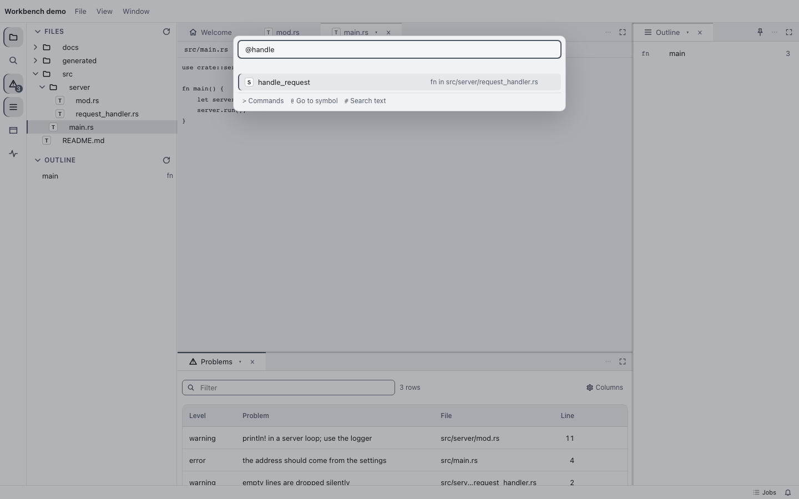
Palette: nothing matches, "Did you mean" offers the close command
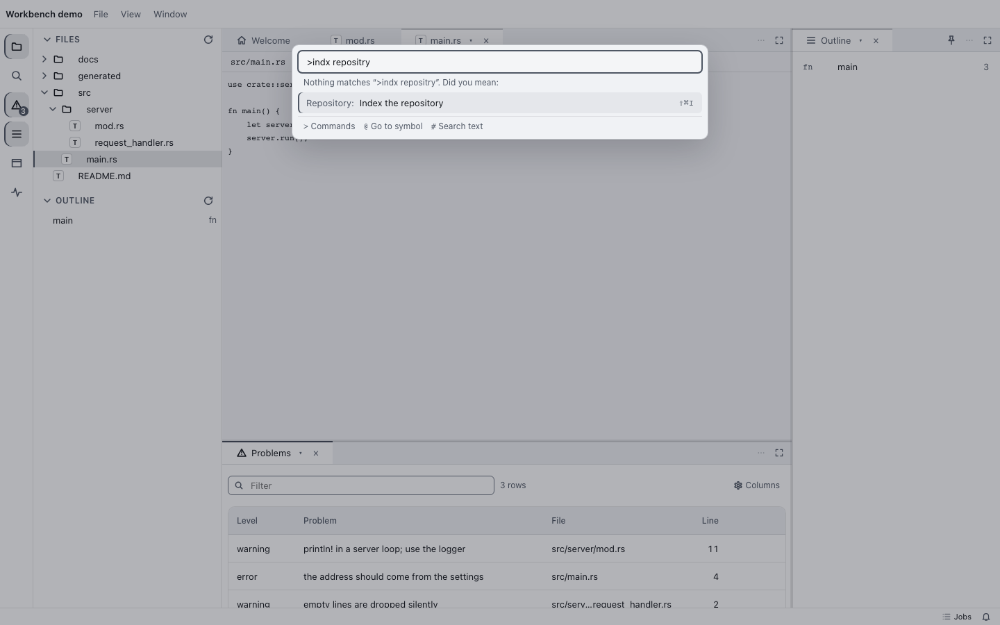
Explorer: context menu of a file (also Shift+F10); folders paged with "Show more"
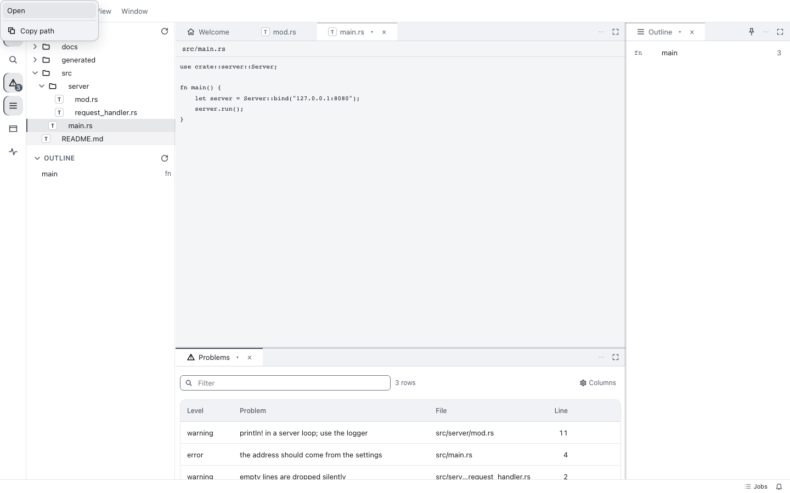
Activity bar: a fly-out item (perspectives); the Problems badge is part of its name
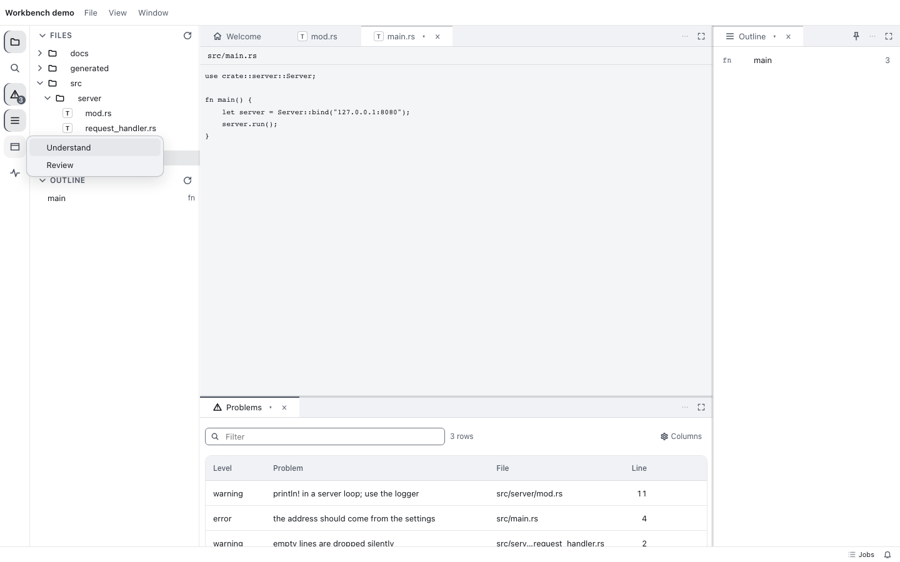
Assistant pane on Pitwall: the calm "not running" state with its fix (pd-needs-ai)
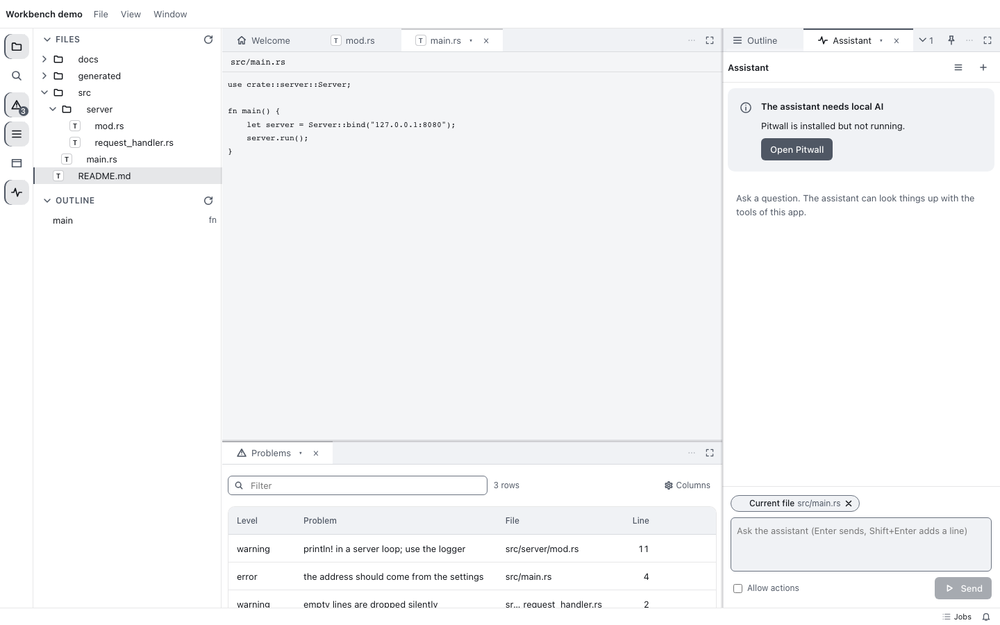
Jobs: the shell jobs list as a status pane at the bottom edge
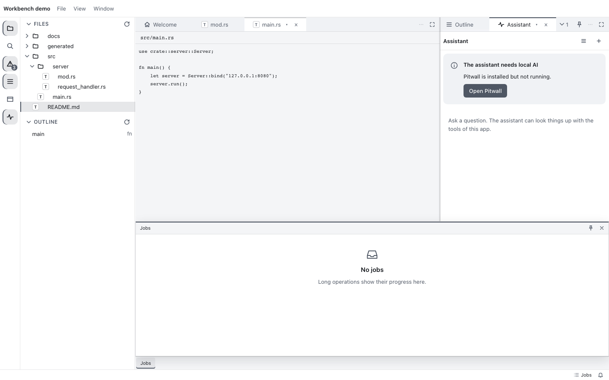
A 600 px window: the layout plan closed the Explorer for the document (Mod+B brings it back)